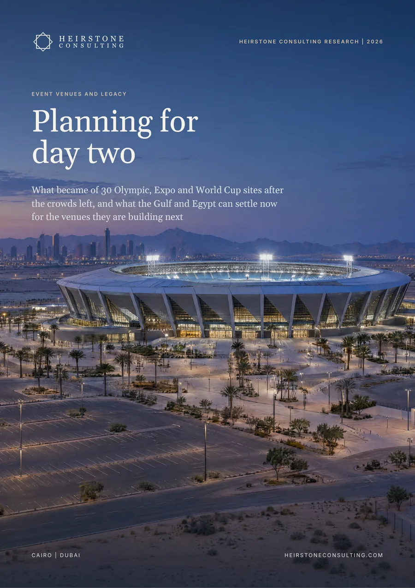

Special Projects
What became of 30 Olympic, Expo and World Cup sites after the crowds left, and what the Gulf and Egypt can settle now for the venues they are building next.

The report in six numbers
average real cost overrun of the Olympic Games from 1960 to 2016; every Games with data overran its budget
of the seats in its seven new World Cup stadiums Qatar planned to remove; in 2025 FIBA still listed Al Janoub at 44,325 seats, against a planned 20,000
of the London Aquatics Centre's Games seats kept for everyday use: 2,500 of 17,500
homes planned at Harumi Flag, Tokyo's former athletes' village, on about 18 hectares
of Expo 2020's buildings and infrastructure kept at Expo City Dubai, established in 2022, the year the Expo closed
new stadiums in Saudi Arabia's 2034 World Cup plan, most listed at about 46,000 seats; Al Hilal plays at the 26,000-seat Kingdom Arena
In brief
We followed 30 Olympic, Expo and World Cup sites in 17 countries from closing ceremony to 2026. The sites that reopened quickly had their landowner and their buyer or tenant fixed in contracts before the event. Where these were settled afterwards, the main reuse took between three and 21 years, and some sites are still waiting. The report applies the lessons to the venues Saudi Arabia, Qatar, the UAE and Egypt are planning now.
Hannover's Expo ran on a trade-fair estate that stayed in use, Expo City Dubai was established in the year the Expo closed and part of London's Olympic Park reopened within a year. In each case the landowner and its buyers or partners were fixed in advance. Where the anchor or development partner came later, the main reuse took three to 21 years: Sydney Olympic Park had 65 residents 11 years after the Games.
London kept 14% of its Aquatics Centre seats by removing two temporary stands. Qatar planned to remove 61% of the seats in its seven new stadiums; by 2025 we found no confirmed removal, and follow-on tournaments were using the bowls. Where no tenant pays its way, the public owner carries the gap.
Athletes' villages convert because a flat still has a buyer once the event has gone. Paris is converting its village into 2,807 homes, with residents from 2025, Tokyo's Harumi Flag holds 5,632, and London sold its village for £825m before the Games, about £293,000 a home.
Sevilla TechPark reports 35,806 jobs on the Expo 92 site, 33 years on. Milan's innovation district had realised about 35% of its investment programme nine years after its Expo. Every Olympic Games with data has overrun its budget, by 156% on average in real terms.
Saudi Arabia's 2034 plan lists 15 stadiums, 11 of them new and most at about 46,000 seats, while Al Hilal plays at the 26,000-seat Kingdom Arena. Riyadh's Expo 2030 legacy plan houses 150,000 people at 25,000 per km², two and a half times the density planned at Expo City Dubai. Egypt already holds about 255,000 seats in its three largest stadiums and staged the 2019 Africa Cup of Nations at about five months' notice.
What it means
Write the day-two owner, anchor and permanent seat count into the host agreement, with a published reopening date, and publish day-two outcomes every year.
Size permanent seats on the average local crowd, add the peak as temporary capacity and test what each venue is worth if the anchor event moves.
Treat the village and the event estate as the first phase of a district, sign an education or research anchor before construction and phase the rest on absorption measured in decades.
Underwrite households and anchor leases on outturn cost, and treat seat revenue as event-day income.
Inside the full report
Heirstone datasets
sites in 17 countries in the Heirstone Day-Two Benchmark: 12 Olympic, 9 Expo and 9 World Cup
tests in the Heirstone day-two readiness scorecard, each tied to a benchmark case
Built from public sources current at October 2026. Every figure is referenced in the report, and figures we derive by combining published numbers are labelled Heirstone analysis.
It depends on contracts signed before the event. Where the owner and the use were fixed in advance, sites reached their main post-event use in a median of under a year. Where they were settled afterwards, it took three to 21 years, and some sites are still waiting.
Housing. Athletes' villages convert because homes still have buyers once the event has gone: Paris is converting its village into 2,807 homes, Tokyo's Harumi Flag holds 5,632, and London pre-sold its village for £825m.
The day-two owner, anchor tenant and permanent seat count for each venue, because Saudi Arabia's 2034 plan lists 11 new stadiums, most at about 46,000 seats, while Al Hilal plays at the 26,000-seat Kingdom Arena. These should be written into the host agreement with a published reopening date.
Special Projects
Heirstone Consulting Research
Tell us what you are deciding and by when. A senior adviser replies within one business day.
Contact us